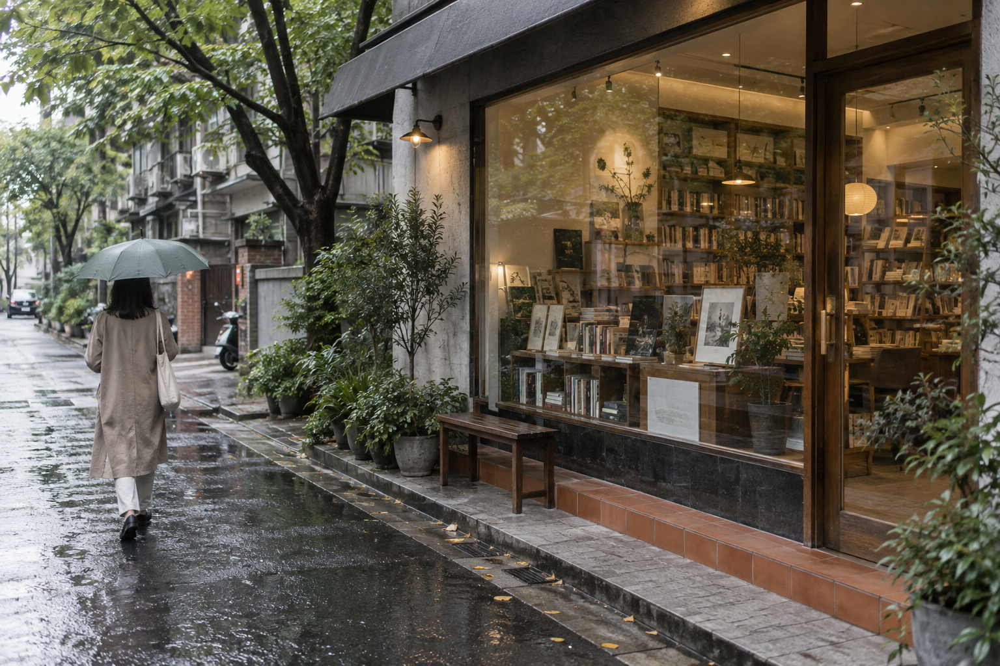

ISSUE 01 / CITY FEATURE
一扇亮着的窗，
让街道慢下来。

示例配图：雨后街边的小书店，AI 生成。
观察栏目 / 城市与生活
§ 01 从街道到门口
橱窗不必堆满信息。让人先看见里面的空间，再决定要不要进去。一步一步的邀请，常常比急着说明所有优点更自然。
“舒服”不是一张漂亮照片能够说完的。座椅、声音、走动的距离，都属于人真正经历的部分。
空间的好，
要等人待下来才知道。
§ 02 把人放回画面
拍下入口，也记录人怎样停留。写下设计者想表达什么，更要观察使用者实际做了什么。故事才不会只剩下一套形容词。
本文为排版示范，不是对某家真实门店的采访。